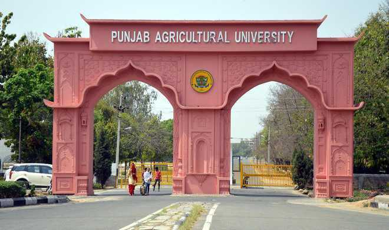
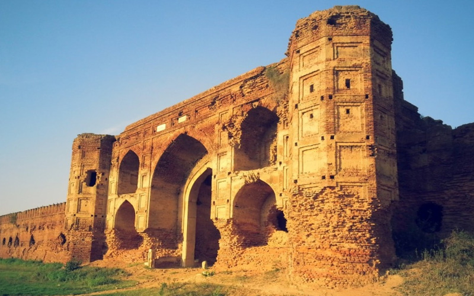
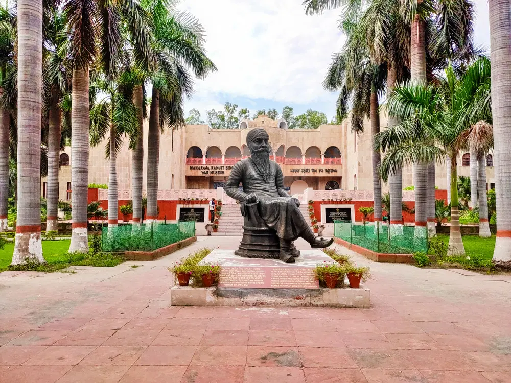

1.RAKH BAGH PARK

This place is a good picnic and day-out spot. The park has a lot to offer especially for children i.e. toy trains, rides, games and activities. The park also has a beautifully carved out bicycle lane, walking track, eateries with proper security. It is suggested to avoid visiting the park on weekends due to overcrowding. Sitting on the southern banks of River Satluj, Ludhiana offers an eclectic punch of history and a cosmopolitan vibe with a myriad of sacred shrines, tourist sites and sprawling malls.
Where: Club Road, Opp. Guru Nanak Stadium
Timings: Anytime
2.PUNJAB AGRICULTURAL UNIVERSITY
3.LODHI FORT
Lodhi Fort is one of the forts in the vicinity of Ludhiana in Punjab. Locally known as Purana Qila or Old Fort, it is a grand structure which now lies in ruins due to poor maintenance. The fort stands on a large piece of land now encroached from all sides. What was once the gateway to Sikander Lodhi's empire and the pride of Maharaja Ranjit Singh, now lies forgotten and in ruins. Surprisingly, a large percent of the local population is not even aware of the whereabouts of this fort. Even though the fort looks like a pretty ordinary ancient structure without invoking much interest of people, it does have a grand past.
4.MAHARAJA RANJIT SINGH WAR MUSEUM 
With more than twelve galleries catering to subjects like the Kargil War and Ancient History, the Maharaja Ranjit Singh War Museum contains an extensive memoir of India's past.